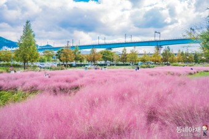

대저생태공원
'대저생태공원'은 낙동강 우안 대저수문에서부터 김해공항램프까지의 둔치지역으로, 구포대교부터 아래로 낙동강하류 철새도래지(천연기념물)에 속하는 지역이다. 신덕습지를 비롯한 크고 작은 습지와 수로, 초지, 유채꽃단지, 각종 체육시설이 조성되어 있어 여가와 휴식을 즐길 수 있는 곳이다. 공원의 양쪽끝에 체육시설과 이용편의시설을 배치하고 그 외 지역은 습지와 초지 등으로 조성하였다. 특히 구포대교 아래쪽으로 조성된 유채경관단지(370,000㎡)에서 매년 4월 개최되는 유채꽃축제에는 수많은 관광객들이 방문하는 새로운 명소로 자리잡고 있다.